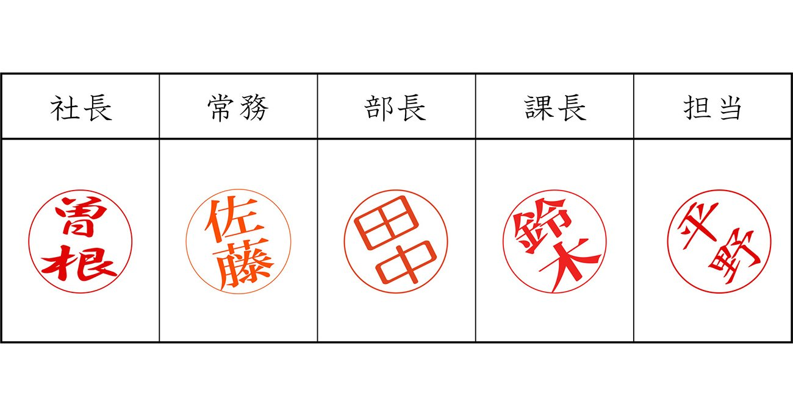

01
【怖っ】普通の人を「トンデモ社員」に豹変させる職場の正体
発行日時：2026年9月19日 05:30 JST ・ NewsPicks編集部
あなたに関係ありそうな理由
個人の性格だけに原因を置かず、日々のルール、負荷、周囲の振る舞いから職場を点検する視点が得られるためです。
概要
記事は、ふだんなら他者を傷つけない人まで攻撃的に振る舞う職場が、どうつくられるのかを、組織心理学の知見とともに解く。焦点は、一人の悪質な加害者を見つける「個人のハラスメント」だけではなく、怒鳴る、強い叱責をする、挨拶を無視するといった振る舞いが職場で当たり前になっていく「構造のハラスメント」だ。人は「こうすべきだ」という建前の規範より、周囲が実際に何をしているかという記述的規範に強く影響される。上司が荒い言葉を使い、同僚も黙認していれば、それを見た人は無意識に同じ振る舞いを学び、次の相手へ再生産しやすい。記事は、小さな無礼や不機嫌の放置を、単なる相性の問題として片づけない。業務量が過剰で余裕がない、長時間労働が続く、助け合うための道具や情報が不足する、といった環境は、他者への注意を削り、攻撃のきっかけを増やし得る。だから対策を研修や禁止事項の周知だけで終えず、現場で受け入れられている行動を観察し、負荷と役割分担を直す必要がある。表示コメントでも、挨拶を返さないような小さな振る舞いが空気を悪くし、誰もが当事者になり得るという指摘が出た。一方で、問題を個人の資質だけに還元すると、環境を変える責任が見えなくなるという見方もある。管理職が見るべきなのは、誰が悪いかを急いで決めることより、何が普通として流通しているかだ。会議の発言順、助けを求めた時の反応、失敗を共有した時の扱いなど、具体的な場面を確かめたい。行動基準を言葉にし、相談経路をつくり、忙しさの偏りを減らすことを同時に進めることで、注意や指導が人格攻撃へ滑るのを防ぎやすくなる。匿名の相談件数だけでなく、異動、休職、退職の前後でどんな出来事が起きたかを個人を特定しない形で振り返れば、危険な兆候を見つけやすい。管理職自身が相談の受け止め方を点検する場も必要になる。職場の雰囲気は抽象的に見えるが、日々の挨拶、依頼、承認、振り返りの積み重ねで変えられる。問題の芽を早く拾うためにも、定期的に現場の実態を聞き、ルールと実際の差を確認することが重要だと示す記事である。組織の外からの目線を入れることも、慣れた空気を見直す助けになる。有効だ。
仕事や会話で使える一言
「個人を責める前に、その振る舞いが職場で普通になっていないかを見たいですね。」
NewsPicks原文を読む
02
【異変】エリートを揺るがす「あの変化」の正体
発行日時：2026年9月19日 05:30 JST ・ Bloomberg
あなたに関係ありそうな理由
AIが知識の取得を速くするほど、学位、採用、社内育成で何を人に託すのかを考える材料になるためです。
概要
記事は、米国のフルタイムMBAプログラム九十八校を比較する新しいランキングを手掛かりに、ビジネススクールが生成AIで問われ始めた役割を追う。スタンフォードが八年ぶりに首位となり、ウォートンでは卒業生の多くが金融やコンサルティングへ進み、高い給与水準が示される。一方で、学校を選ぶ側が期待する価値は、講義で知識を得ることだけではなくなっている。ChatGPT、Copilot、Claudeのようなツールが調査、文章作成、ケース分析を手助けするため、従来なら授業の中心だった情報の整理や定型的な分析は、以前より速くできる。記事は、最近の卒業生の五三％が生成AIを週五日以上使うという調査結果を紹介し、利用が一部の技術職だけに限られなくなった状況を示す。それでも、主要校の多くはAIを必修科目にしておらず、ウォートンやデュークでは入学前の導入プログラムを設けるなど対応は分かれる。ここで重要なのは、AI教育を一科目追加すれば済むと考えないことだ。AIが答えらしきものを出す時代には、どの問いを立てるか、前提を疑うか、異なる利害を持つ相手と意思決定するかが、むしろ人に残る。記事が示すビジネススクールの価値も、知識の倉庫より、同級生や卒業生、教員との関係を通じて判断を磨く場へ寄っている。表示コメントには、学びの本質はネットワークや人との相互作用にあり、AIはその緊張感を弱めも強めもするという見方があった。企業の研修でも同じで、便利な要約ツールを配るだけでは、経験を共有し、意見の違いを検証する場は生まれない。AIの利用頻度だけで成果を測ると、課題設定、反証、倫理、顧客への説明といった工程が見えなくなる。速く答えを出す人だけを評価しない仕組みも必要だ。採用や育成を考える時は、AIを使えるかだけでなく、出力の根拠を確かめ、他者に説明し、責任ある判断へつなげられるかを見たい。学校がカリキュラムをどこまで組み替え、企業が卒業生に何を期待するのかは、教育投資と人材市場の両方を左右する。AIが日常化するほど、成果物の速さと、そこへ至る思考や協働の質を分けて評価する必要があるという記事である。答えの質と検証の過程をともに評価したい。
仕事や会話で使える一言
「AIが答えを速くしても、問いを立てて他者と判断する力は別に育てる必要がありますね。」
NewsPicks原文を読む
03
「会議のための会議」はいらない…Amazonが455の「職場のムダ」にメスを入れた方法
発行日時：2026年9月19日 17:30 JST ・ ダイヤモンド・オンライン

あなたに関係ありそうな理由
会議や承認を減らす時に、単に規則をなくすのでなく、判断を支える原則と責任をどう残すか考えられるためです。
概要
記事は、アンディ・ジャシーCEOがAmazon社内の官僚的な手続きを減らすために設けた窓口へ千五百通超の意見が集まり、約一年で四百五十五のルールやプロセスが変更・廃止された事例を取り上げる。象徴的なのは、会議の前にさらに会議を重ねるような「会議のための会議」や、責任の所在が曖昧な事前調整を見直した点だ。ただし、この記事はルールを少なくすれば自動的に強い組織になるとは言わない。Netflixの「Context, not Control」という考え方を参照しながら、詳細な統制を増やす代わりに、何を目指すか、どんな判断を歓迎するかという文脈を共有する重要性を説明する。Netflixが掲げるのは、規則をゼロにすることではなく、人材を優先し、居心地の良さより挑戦を選び、常により良くするという原則を軸に、高い自律を機能させる設計だ。記事では、判断や率直さ、創造性、勇気、好奇心、回復力などの価値観と、フィードバックで目指す四つのA、すなわち相手を助け、行動可能にし、感謝を示し、受け入れるか捨てるかを示す枠組みも紹介される。ルールを減らすことは、自由を増やすだけでなく、判断の質をより個人へ委ねることでもある。表示コメントでは、Amazonの数字だけをまねるのでなく、不要な手続きを問い直し、最終的に誰が決めるのかを明確にする能力が重要だという論点が出た。規則のない組織が成り立つのは、全員が高い判断力を持つ場合に限られるという慎重な見方もある。自分の組織で試すなら、まず会議、承認、報告のそれぞれについて、誰のどんな判断を助けているかを確認したい。目的が説明できない工程は止め、必要な工程には期限と責任者を置く。承認を一つ減らした後に、品質、顧客対応、現場の負担がどう変わったかを記録しておけば、削減を単なるコストカットで終わらせずに済む。さらに、自由度を上げる代わりに、失敗や異論を安全に共有できる基準をつくることが必要になる。制度をなくすこと自体を成果にせず、顧客や現場に届く意思決定が速く、納得できるものになったかで点検する。ルールの設計と人の育成を切り離さないことが、この記事から得られる実務的な示唆である。
仕事や会話で使える一言
「ルールを減らすなら、代わりに判断の原則と責任者をはっきりさせたいですね。」
NewsPicks原文を読む
04
「住み続けたい街」首都圏ランク1位は「鵠沼」 渋谷区も高人気
発行日時：2026年9月19日 16:30 JST ・ 毎日新聞
あなたに関係ありそうな理由
街の人気をランキングの順位だけで判断せず、調査の設計、暮らしの実感、供給や将来人口まで分けて読めるためです。
概要
記事は、リクルートが公表した「住み続けたい街」首都圏版で、藤沢市の鵠沼が一位になったことを伝える。海への近さや地域への愛着だけでなく、二〇五〇年まで人口増加が見込まれ、平均年齢が比較的若いという地域の状況、海岸清掃のような住民活動も紹介される。二位は千駄ケ谷、三位は赤坂で、渋谷区内の駅は上位五十位に七駅が入った。記事は、暮らしやすさが通勤や買い物の利便性だけで決まらず、地域に関わる機会や将来への見通しも評価に影響することを示す。一方、ランキングを読む時には、何を測っているかを確かめる必要がある。この調査は、東京都、神奈川県、千葉県、埼玉県、茨城県に住む二十歳以上を対象に、現在の街に住み続けたい意向を尋ね、一定数以上の回答がある駅を集計している。順位は便利な比較材料だが、個別の家族構成、予算、通学・通勤、災害リスク、物件の供給量まで直接に判定するものではない。表示コメントでは、「住みたい街」ランキングと同じように知名度や露出が効く調査ではなく、住民の評価を駅ごとに平均する設計であるため、二つのランキングをそのまま比べない方がよいという指摘があった。鵠沼についても、新築供給の少なさや住民構成など、順位の背景をさらに読む必要がある。住宅を選ぶ時、人気の街という言葉は安心材料になる一方、価格や選択肢を動かす要素にもなる。特に沿岸部では、日常の魅力と災害時の避難、保険、交通の条件を別に調べたい。住み続ける意向が高いことと、希望の価格で住み替えられることも同じではない。候補地を比べるなら、ランキングを入口にして、通勤時間、保育・学校、買い物や医療、洪水や津波などのハザード、賃貸・売買の在庫、将来の人口構成を自分の条件に置き直したい。街の魅力が保たれる理由を、駅前の再開発だけでなく、住民が地域と関わり続けられる仕組みから見ることも有効だ。順位の高さを結論にせず、調査の対象と指標を読んでから、生活の実感と照合する。一次資料と現地の状況を確かめ、暮らしの変化に耐えられるかまで見て、契約を判断したい。この記事は、都市や住宅の話題を数字と物語の両方で受け止めるための材料になる。見落とさない。
仕事や会話で使える一言
「街ランキングは結論ではなく、調査設計と自分の暮らしの条件を照合する入口ですね。」
NewsPicks原文を読む
05
独ＶＷ、１兆８０００億円打撃 傘下のポルシェ不振、利益を圧迫
発行日時：2026年9月19日 07:27 JST ・ 共同通信
あなたに関係ありそうな理由
大企業の利益悪化を、売上、減損、競争、関税、再編といった異なる要因へ分けて読む習慣につながるためです。
概要
記事は、ドイツのフォルクスワーゲンが二〇二六年の利益を約百億ユーロ、円換算で約一兆八千億円押し下げる見通しを示し、営業利益率の予想を従来の四〜五・五％から最大一％へ引き下げたことを伝える。中心にあるのは傘下ポルシェの不振で、のれんなどに関する約六十億ユーロの減損を計上する見込みだ。さらに、中国市場での競争の激化、米国の関税、事業再編のコストも利益を圧迫する要因として挙げられる。売上高の見通しは三千百五十億ユーロで前年より二％減となり、販売台数だけでなく、地域別の競争環境やコスト構造が収益性を左右する局面が見える。減損は直ちに同額の現金流出を意味するものではないが、過去に見込んだ収益力や資産価値を見直す会計上の判断であり、将来の配当、投資、ブランド戦略を考えるうえで無視できない。表示コメントでは、ポルシェののれん減損と、中国にあるVW資産の評価、早期退職や工場売却に伴う費用を混ぜずに読むべきだという指摘があった。つまり「一兆八千億円の打撃」という大きな見出しを見た時には、それが一時的な会計処理なのか、継続的な採算悪化なのか、どの事業・地域に由来するのかを分解する必要がある。ポルシェは高級車ブランドとしての価格や電動化戦略、中国での競争への向き合い方が問われ、VW全体では再編を進めながら販売と投資をどう両立させるかが焦点になる。減損後にも販売の回復やコスト削減が進むのか、投資を縮めすぎて次世代の商品競争を弱めないかも見ておきたい。経営が示す回復の前提と実績を照らし合わせる必要がある。自動車産業は、製品の切り替えに長い投資期間を要し、関税や為替の変化も利益へ届くため、単年度の利益率だけで回復を判断しにくい。今後は、減損後の資産価値、地域別の販売動向、電動化に必要な投資、固定費の見直しがどの程度進むかを追いたい。企業の決算を読む時も、売上の増減、現金の動き、会計上の損失、次の投資計画を一つにまとめず、別々に確認することが重要だ。大型損失の報道は、経営の回復策と実行の速さまで見る入口にしたい。この記事は、巨大な損失額の背景を分けて捉える必要を教えてくれる。今後の実績まで追いたい。
仕事や会話で使える一言
「大きな損失額は、現金流出、減損、地域別の競争を分けて見る必要がありますね。」
NewsPicks原文を読む